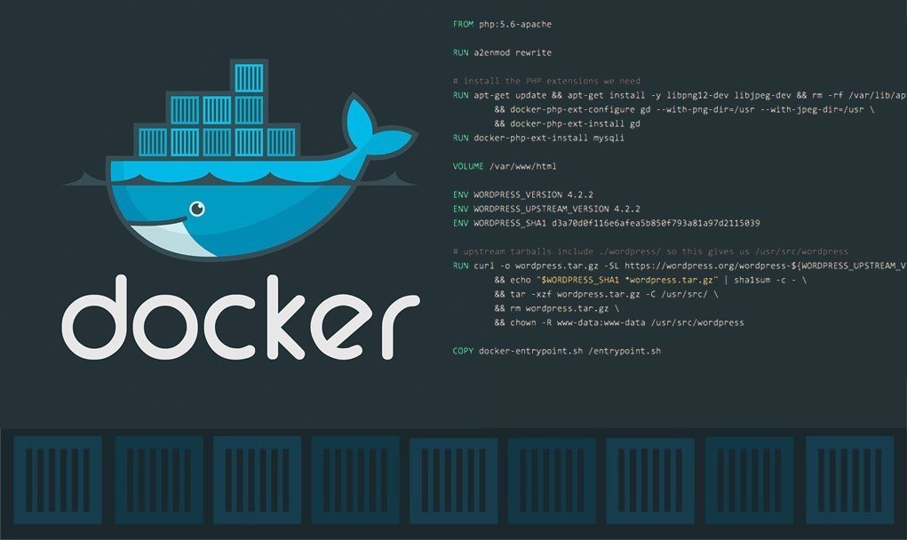

Dockerfile¶
使用 Dockerfile 定制镜像

镜像的定制实际上就是定制镜像的每一层所添加的配置、文件等信息，实际上当我们在一个容器中添加或者修改了一些文件后，我们可以通过docker commit命令来生成一个新的镜像，但是这个方法不够直观，没办法追溯我们镜像里面到底有哪些内容，所以实际定制镜像的过程我们很少采用这种方式。而是使用一个名为 Dockerfile 的文本文件来进行镜像定制，我们可以把镜像的每一层修改、安装、构建、操作的命令都写入到这个文件中，一行就对应镜像的一层，这种方法显然要更高级，因为我们有一个文件来直观反映我们的镜像内容，还可以作为版本记录进行跟踪。
定制镜像¶
以我们之前的 nginx 镜像为例，我们现在来定制一个 nginx 镜像，要求默认的应用页面访问的内容是 Hello Docker。
首先我们新建一个目录 testnginx，然后在该目录下面新建一个名为Dockerfile的空白文本文件：
$ mkdir -p testnginx && cd testnginx && touch Dockerfile然后向Dockerfile文件中添加如下内容：
FROM nginx
RUN echo 'Hello Docker!' > /user/share/nginx/html/index.html这个文件很简单，一共就两行，其中包含两条指令，FROM 和 RUN。
FROM 指令¶
定制镜像，那么肯定是一个镜像为基础，在其基础上进行定制，而 FROM 这个指令就是来指定基础镜像的，所以在一个 Dockerfile 文件中 FROM 指令是必备的，并且必须是第一条指令。
在 Docker Hub 上有非常多的高质量的官方镜像，有一些可以直接拿来使用的服务类的镜像，如 nginx、redis、mongo、mysql、httpd、php、tomcat 等；也有一些方便开发、构建、运行各种语言应用的镜像，如 node、openjdk、python、ruby、golang 等。可以在其中寻找一个最符合我们最终目标的镜像为基础镜像进行定制。
如果没有找到合适的基础镜像，则可以使用官方提供的一些更为基础的操作系统镜像，比如 ubuntu、debian、centos、alpine 等，这些基础镜像为我们提供了更大的扩展空间，就类似于平时我们在操作系统上面部署自己的服务一样的操作。
除了选择现有镜像为基础镜像外，Docker 还存在一个特殊的镜像，名为 scratch，这个镜像是一个虚拟的镜像，并不实际存在，表示一个空白的镜像：
FROM scratch
...如果你以 scratch 为基础镜像的话，意味着你不以任何镜像为基础，接下来所写的指令将作为镜像第一层开始存在。有的同学可能感觉很奇怪，没有任何基础镜像，我怎么去执行我的程序呢，其实对于 Linux 下静态编译的程序来说，并不需要有操作系统提供运行时支持，所需的一切库都已经在可执行文件里了，因此直接FROM scratch会让镜像体积更加小巧。使用 Go 语言 开发的应用很多会使用这种方式来制作镜像，这也是为什么有很多观点认为 Go 是特别适合容器微服务架构的语言的原因之一。
RUN 指令¶
RUN 指令是用来执行命令行命令的。由于命令行的强大能力，所以 RUN 指令是定制镜像时是最常用的指令之一。其格式有两种：
-
shell 格式：
RUN <命令>，就像直接在命令行中输入的命令一样。刚才写的 Dockerfile 中的 RUN 指令就是这种格式：RUN echo 'Hello, Docker!' > /usr/share/nginx/html/index.html -
exec 格式：
RUN ["可执行文件", "参数1", "参数2"]，这更像是函数调用中的格式。既然 RUN 就像 Shell 脚本一样可以执行命令，那么我们是否就可以像 Shell 脚本一样把每个命令对应一个 RUN 呢？比如这样：FROM debian:jessie RUN apt-get update RUN apt-get install -y gcc libc6-dev make wget RUN wget -O redis.tar.gz "http://download.redis.io/releases/redis-3.2.5.tar.gz" RUN mkdir -p /usr/src/redis RUN tar -xzf redis.tar.gz -C /usr/src/redis --strip-components=1 RUN make -C /usr/src/redis RUN make -C /usr/src/redis install # 其他指令...
之前说过，Dockerfile 中每一个指令都会建立一层，RUN 也不例外。每一个 RUN 就会新建立一层，在其上执行这些命令，执行结束后，commit 这一层的修改，构成新的镜像。
而上面的这种写法，创建了 7 层镜像。这是完全没有必要的，而且很多运行时不需要的东西，都被装进了镜像里，比如编译环境、更新的软件包等等。结果就是产生非常臃肿、非常多层的镜像，不仅仅增加了构建部署的时间，也很容易出错。 这是很多初学 Docker 的人常犯的一个错误。
UnionFS 层限制
UnionFS 实际上是有最大层数限制的，比如 AUFS，曾经是最大不得超过 42 层，现在是不得超过 127 层。
上面的 Dockerfile 正确的写法应该是这样：
FROM debian:jessie
RUN buildDeps='gcc libc6-dev make wget' \
&& apt-get update \
&& apt-get install -y $buildDeps \
&& wget -O redis.tar.gz "http://download.redis.io/releases/redis-3.2.5.tar.gz" \
&& mkdir -p /usr/src/redis \
&& tar -xzf redis.tar.gz -C /usr/src/redis --strip-components=1 \
&& make -C /usr/src/redis \
&& make -C /usr/src/redis install \
&& rm -rf /var/lib/apt/lists/* \
&& rm redis.tar.gz \
&& rm -r /usr/src/redis \
&& apt-get purge -y --auto-remove $buildDeps
# 其他指令...首先，之前所有的命令只有一个目的，就是编译、安装 redis 可执行文件。因此没有必要建立很多层，这只是一层的事情。所以我们这里没有使用很多个 RUN 指令来对应不同的命令，而是仅仅使用一个 RUN 指令，并使用&&将各个所需命令串联起来。将之前的 7 层，简化为了 1 层。在撰写 Dockerfile 的时候，要经常提醒自己，这并不是在写 Shell 脚本，而是在定义每一层该如何构建。
并且，这里为了格式化还进行了换行。Dockerfile 支持 Shell 类的行尾添加\的命令换行方式，以及行首#进行注释的格式。良好的格式，比如换行、缩进、注释等，会让维护、排障更为容易，这是一个比较好的习惯。
此外，还可以看到这一组命令的最后添加了清理工作的命令，删除了为了编译构建下载的软件，清理了所有下载、展开的文件，并且还清理了 apt 缓存文件。这是很重要的一步，我们之前说过，镜像是多层存储，每一层的东西并不会在下一层被删除，会一直跟随着镜像。因此镜像构建时，一定要确保每一层只添加真正需要添加的东西，任何无关的东西都应该清理掉。 很多人初学 Docker 制作出了很臃肿的镜像的原因之一，就是忘记了每一层构建的最后一定要清理掉无关文件。
WORKDIR 指令¶
WORKDIR 指令设置 Dockerfile 中的任何 RUN，CMD，ENTRPOINT，COPY 和 ADD 指令的工作目录。如果 WORKDIR 指定的目录不存在，即使随后的指令没有用到这个目录，都会创建该目录。
格式： WORKDIR /path/to/workdir
为了清晰性和可靠性，你应该总是在 WORKDIR 中使用绝对路径，而且单个 Dockerfile 可以使用多次WORKDIR。另外，我们应该使用 WORKDIR 来替代类似于 RUN cd ... && do-something 的指令，后者难以阅读、排错和维护。
ADD & COPY 指令¶
Dockerfile 中的 COPY 指令和 ADD 指令都可以将主机上的资源复制或加入到容器镜像中，都是在构建镜像的过程中完成的。
COPY 指令和 ADD 指令的唯一区别在于是否支持从远程 URL 获取资源。COPY 指令只能从执行docker build所在的主机上读取资源并复制到镜像中。而 ADD 指令还支持通过 URL 从远程服务器读取资源并复制到镜像中。
一般来说满足同等功能的情况下，推荐使用COPY指令。ADD 指令更擅长读取本地 tar 文件并解压缩。
COPY 指令¶
COPY 指令能够将构建命令所在的主机本地的文件或目录，复制到镜像文件系统。COPY 指令同样也支持 exec 和 shell 两种格式：
-
exec 格式用法：
COPY ["<src>",... "<dest>"]，特别适合路径中带有空格的情况。 -
shell 格式用法：
COPY <src>... <dest>
ADD 指令¶
ADD 指令不仅能够将构建命令所在的主机本地的文件或目录，而且能够将远程 URL 所对应的文件或目录，作为资源复制到镜像文件系统。所以，可以认为 ADD 是增强版的 COPY，支持将远程 URL 的资源加入到镜像的文件系统。同样也支持 exec 和 shell 两种格式用法：
* exec 格式用法：ADD ["<src>",... "<dest>"]，特别适合路径中带有空格的情况
- shell 格式用法：
ADD <src>... <dest>
从远程 URL 获取资源，比如：
ADD http://foo.com/bar.go /tmp/main.go不过需要注意的是对于从远程 URL 获取资源的情况，由于 ADD 指令不支持认证，如果从远程获取资源需要认证，则只能使用RUN wget 或 RUN curl 替代了。
有能力自动解压文件，比如：
ADD /foo.tar.gz /tmp/上述指令会使 foo.tar.gz 压缩文件解压到容器的 /tmp 目录。
不过一般来说虽然 ADD 指令支持从远程获取资源，但是并不推荐使用，而是建议使用 RUN 指令去执行 wget 或 curl 命令。
比如前面我们定制的 nginx 镜像，可以改成下面的形式：
$ echo 'Hello Docker!' > index.html然后修改 Dockerfile：
FROM nginx
# COPY或者ADD指令都可以
COPY index.html /user/share/nginx/html/index.html注意事项¶
COPY 指令和 ADD指令的用法非常相似，具体注意事项如下：
- 源路径可以有多个
- 源路径是相对于执行 build 的相对路径
- 源路径如果是本地路径，必须是构建上下文中的路径
- 源路径如果是一个目录，则该目录下的所有内容都将被加入到容器，但是该目录本身不会
- 目标路径必须是绝对路径，或相对于 WORKDIR 的相对路径
- 目标路径如果不存在，则会创建相应的完整路径
- 目标路径如果不是一个文件，则必须使用/结束
- 路径中可以使用通配符
构建镜像¶
现在让我们再回到之前定制的 nginx 镜像的 Dockerfile 来。现在我们明白了这个 Dockerfile 的内容，那么让我们来构建这个镜像吧。在 Dockerfile 文件所在目录执行：
$ docker build -t nginx:v1 .
Sending build context to Docker daemon 2.048 kB
Step 1 : FROM nginx
---> e43d811ce2f4
Step 2 : RUN echo 'Hello, Docker!' > /usr/share/nginx/html/index.html
---> Running in 9cdc27646c7b
---> 44aa4490ce2c
Removing intermediate container 9cdc27646c7b
Successfully built 44aa4490ce2c从命令的输出结果中，我们可以清晰的看到镜像的构建过程。在 Step 2 中，如同我们之前所说的那样，RUN 指令启动了一个容器 9cdc27646c7b，执行了所要求的命令，并最后提交了这一层 44aa4490ce2c，随后删除了所用到的这个容器 9cdc27646c7b。这里我们使用了 docker build 命令进行镜像构建。其格式为：
$ docker build [选项] <上下文路径/URL/->在这里我们通过 -t 参数指定了最终镜像的名称 nginx:v1，构建成功后，我们就可以直接使用这个镜像来运行容器了。
构建上下文¶
如果我们仔细观察的话会看到 docker build 命令最后有一个 .。. 表示当前目录，而 Dockerfile 就在当前目录，因此不少初学者以为这个路径是在指定 Dockerfile 所在路径，这么理解其实是不准确的。如果对应上面的命令格式，你可能会发现，这是在指定上下文路径。那么什么是上下文呢？
首先我们要理解 docker build 的工作原理。Docker 在运行时分为 Docker Daemon 和客户端工具。Docker 的引擎提供了一组 REST API，被称为 Docker Remote API，而如 docker 命令这样的客户端工具，则是通过这组 API 与 Docker 引擎交互，从而完成各种功能。因此，虽然表面上我们好像是在本机执行各种 docker 功能，但实际上，一切都是使用的远程调用形式在服务端（Docker 引擎）完成。也因为这种 C/S 设计，让我们操作远程服务器的 Docker 引擎变得轻而易举。
当我们进行镜像构建的时候，并非所有定制都会通过 RUN 指令完成，经常会需要将一些本地文件复制进镜像，比如通过 COPY 指令、ADD 指令等。而 docker build 命令构建镜像，其实并非在本地构建，而是在服务端，也就是 Docker 引擎中构建的。那么在这种客户端/服务端的架构中，如何才能让服务端获得本地文件呢？
这就引入了上下文的概念。当构建的时候，用户会指定构建镜像上下文的路径，docker build 命令得知这个路径后，会将路径下的所有内容打包，然后上传给 Docker 引擎。这样 Docker 引擎收到这个上下文包后，展开就会获得构建镜像所需的一切文件。如果在 Dockerfile 中这么写：
COPY ./package.json /app/这并不是要复制执行 docker build 命令所在的目录下的 package.json，也不是复制 Dockerfile 所在目录下的 package.json，而是复制 上下文（context） 目录下的 package.json。
因此，COPY 这类指令中的源文件的路径都是相对路径。这也是初学者经常会问的为什么 COPY ../package.json /app 或者 COPY /opt/xxxx /app 无法工作的原因，因为这些路径已经超出了上下文的范围，Docker 引擎无法获得这些位置的文件。如果真的需要那些文件，应该将它们复制到上下文目录中去。
现在就可以理解刚才的命令docker build -t nginx:v1 .中的这个.，实际上是在指定上下文的目录，docker build 命令会将该目录下的内容打包交给 Docker 引擎以帮助构建镜像。
如果观察 docker build 输出，我们其实已经看到了这个发送上下文的过程：
$ docker build -t nginx:v1 .
Sending build context to Docker daemon 2.048 kB
...理解构建上下文对于镜像构建是很重要的，可以避免犯一些不应该的错误。比如有些初学者在发现 COPY /opt/xxxx /app 不工作后，于是干脆将 Dockerfile 放到了硬盘根目录去构建，结果发现 docker build 执行时发送一个几十 GB 的东西，极为缓慢而且很容易构建失败。那是因为这种做法是在让 docker build 打包整个硬盘，这显然是使用错误。
一般来说，应该会将 Dockerfile 置于一个空目录下，或者项目根目录下。如果该目录下没有所需文件，那么应该把所需文件复制一份过来。如果目录下有些东西确实不希望构建时传给 Docker 引擎，那么可以用 .gitignore 一样的语法写一个 .dockerignore，该文件是用于剔除不需要作为上下文传递给 Docker 引擎的。
那么为什么会有人误以为 . 是指定 Dockerfile 所在目录呢？这是因为在默认情况下，如果不额外指定 Dockerfile 的话，会将上下文目录下的名为 Dockerfile 的文件作为 Dockerfile。这只是默认行为，实际上 Dockerfile 的文件名并不要求必须为 Dockerfile，而且并不要求必须位于上下文目录中，比如可以用-f ../Dockerfile.Dev参数指定某个文件作为 Dockerfile。
当然，一般大家习惯性的会使用默认的文件名 Dockerfile，以及会将其置于镜像构建上下文目录中。
推送镜像¶
上面我们讲到了 Dockerfile 的基本写法以及构建镜像的时候一些注意事项，那么镜像构建完成后，如何把我们的镜像给到别人使用呢？第一种方法就是利用 Docker 官方提供的公共的 Docker Hub 仓库，我们可以将镜像推送上去，然后别人就可以直接拉取镜像。
注册¶
首先需要 https://cloud.docker.com 免费注册一个 Docker 账号。
登录¶
然后通过执行docker login命令交互式的输入用户名及密码来完成在命令行界面登录 Docker Hub。
$ docker login
Login with your Docker ID to push and pull images from Docker Hub. If you don't have a Docker ID, head over to https://hub.docker.com to create one.
Username: cnych
Password:
WARNING! Your password will be stored unencrypted in /root/.docker/config.json.
Configure a credential helper to remove this warning. See
https://docs.docker.com/engine/reference/commandline/login/#credentials-store
Login Succeeded注销¶
你可以通过docker logout退出登录。
推送镜像¶
用户在登录后可以通过docker push命令来将自己的镜像推送到 Docker Hub。以下命令中的 username 请替换为你的 Docker 账号用户名。
$ docker tag ubuntu:17.10 username/ubuntu:17.10
$ docker image ls
REPOSITORY TAG IMAGE ID CREATED SIZE
ubuntu 17.10 275d79972a86 6 days ago 94.6MB
username/ubuntu 17.10 275d79972a86 6 days ago 94.6MB
$ docker push username/ubuntu:17.10私有仓库¶
有时候我们可能希望我们的镜像只在局域网范围内使用，不希望推送到 Docker Hub 这样的公共仓库，那么这个时候我们可以创建一个本地仓库供私人使用。
docker-registry 就是是官方提供的一个私有仓库工具，可以用于存储私有的镜像仓库。同样的我们可以通过获取官方 registry 镜像来直接运行：
$ docker run -d -p 5000:5000 --name registry registry上面的命令会使用官方的 registry 镜像来启动私有仓库容器。默认情况下，仓库会被创建在容器的/var/lib/registry目录下。你可以通过 -v 参数来将镜像文件存放在本地的指定路径。例如下面的例子将上传的镜像放到本地的 /opt/data/registry 目录:
$ docker run -d \
-p 5000:5000 \
-v /opt/data/registry:/var/lib/registry \
registry这样我们就运行了一个数据持久化的私有镜像仓库。
创建好私有仓库之后，然后可以使用docker tag来标记一个镜像，然后推送它到仓库。比如私有仓库地址为127.0.0.1:5000。先在本机查看已有的镜像。
$ docker image ls
REPOSITORY TAG IMAGE ID CREATED VIRTUAL SIZE
ubuntu latest ba5877dc9bec 6 weeks ago 192.7 MB使用docker tag将 ubuntu:latest 这个镜像标记为 127.0.0.1:5000/ubuntu:latest:
$ docker tag ubuntu:latest 127.0.0.1:5000/ubuntu:latest
$ docker image ls
REPOSITORY TAG IMAGE ID CREATED VIRTUAL SIZE
ubuntu latest ba5877dc9bec 6 weeks ago 192.7 MB
127.0.0.1:5000/ubuntu:latest latest ba5877dc9bec 6 weeks ago 192.7 MB然后就可以使用docker push上传标记的镜像:
$ docker push 127.0.0.1:5000/ubuntu:latest
The push refers to repository [127.0.0.1:5000/ubuntu]
373a30c24545: Pushed
a9148f5200b0: Pushed
cdd3de0940ab: Pushedfc56279bbb33: Pushed
b38367233d37: Pushed
2aebd096e0e2: Pushed
latest: digest: sha256:fe4277621f10b5026266932ddf760f5a756d2facd505a94d2da12f4f52f71f5a size: 1568此外，我们还可以使用 registry 仓库提供的 API 来查看仓库中的镜像：
$ curl 127.0.0.1:5000/v2/_catalog
{"repositories":["ubuntu"]}这里可以看到 {"repositories":["ubuntu"]}，表明镜像已经被成功上传了。
先删除已有镜像，再尝试从私有仓库中下载这个镜像。
$ docker image rm 127.0.0.1:5000/ubuntu:latest
$ docker pull 127.0.0.1:5000/ubuntu:latest
Pulling repository 127.0.0.1:5000/ubuntu:latest
ba5877dc9bec: Download complete
511136ea3c5a: Download complete
9bad880da3d2: Download complete
25f11f5fb0cb: Download complete
ebc34468f71d: Download complete
2318d26665ef: Download complete
$ docker image ls
REPOSITORY TAG IMAGE ID CREATED VIRTUAL SIZE
127.0.0.1:5000/ubuntu:latest latest ba5877dc9bec 6 weeks ago 192.7 MB到这里我们就完成了把镜像上传到了私有仓库中的完整过程。
注意事项¶
如果你不想使用 127.0.0.1:5000 作为仓库地址，比如想让本网段的其他主机也能把镜像推送到私有仓库。你就得把例如 192.168.199.100:5000 这样的内网地址作为私有仓库地址，这时你会发现无法成功推送镜像。
这是因为 Docker 默认不允许非 HTTPS 方式推送镜像。我们可以通过 Docker 的配置选项来取消这个限制，我们这里是 CentOS 7 系统，同样还是编辑文件/etc/docker/daemon.json，添加如下内容：
{
"registry-mirror": [
"https://registry.docker-cn.com"
],
"insecure-registries": [
"192.168.199.100:5000"
]
}其中的insecure-registries就是我们添加的内容，然后重启 Docker 之后就可以在局域网内使用我们的私有镜像仓库了。
默认的私有镜像仓库可以满足我们的很多需求，但是往往在企业中使用的话还有很安全性方面的功能的缺失，比如权限管理之类的，这对于企业来说是非常重要的，不过 registry 对于权限管理这一块做了一个对外暴露的接口，只要我们实现他暴露的安全接口就可以来实现权限管理相关的接口，其中注明的开源镜像管理软件 Harbor 就是这类应用的佼佼者，我们还在后面的课程中和大家学习 Harbor 的一个使用。